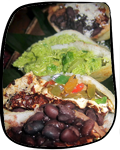
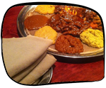
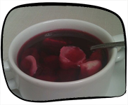
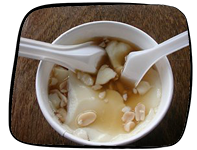

Are you one to try exotic foreign foods? Here's a random selection of delicious international cuisines to try:
Arepas, arepas, arepas! And more Venezuelan treats. Try an arepa with sweet plantains. Pick me!
Give Ethiopian food a try! No utensils necessary. All you have to do is dip the porous bread-like sheets into a variety of pungent meats and vegetable sauces. The sampler is a great introduction for newbies. Pick me!

Delicious Indian food in a swanky setting. You can also watch the tandoori oven at work. If you're looking for something to brighten your day, order the poori. Pick me!
The best dim sum in NYC. If you're coming on a weekend, try to arrive before the crowd. Pick me!
Real authentic Northeastern Thai food. Try the boat noodles or the drunken man noodles. Pick me!
Pierogies and borscht. Mmmm. This place is what I would imagine a greasy spoon in Poland would feel like. Pick me!

Even though this Mexican place is buried in Chinatown, it's unmistakably authentic. Try the tortilla soup. Pick me!

If you haven't had Korean barbecue before you're missing out. Bring a group of friends with you. Pick me!
Try the Tofu Fa for a real taste of China. Pick me!